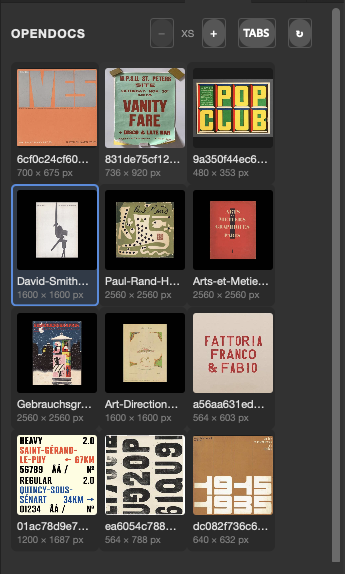

14
opendocs
A panel of live thumbnails of every open document. Click one to bring it to the front - no more hunting through the >> tab overflow.

about
Photoshop's document tabs run out of room after a handful of long filenames and everything else hides behind the >> button. OpenDocs is the pages panel InDesign has and Photoshop doesn't: a grid of small pictures of what is actually open, the active document outlined, the filename and pixel size under each. It reads each picture from Photoshop's own image pyramid through the UXP Imaging API, so a thumbnail of a 300 ppi A3 poster costs a fraction of a second and the document being read is never brought forward. Thumbnails refresh themselves a moment after you stop editing; nothing is written to any document.
- app
- photoshop
- type
- uxp panel
- built by
- claude
- state
- working
- version
- 1.0.1
- requires
- Photoshop 24.2+
- plugin id
- com.simonmorse.opendocs
- folder
- OpenDocs-Photoshop-Plugin
quick start
- 01Open Plugins › OpenDocs and dock it wherever suits - it works as a tall single column at the side or a wide strip along the bottom; tiles wrap to fit.
- 02Click a thumbnail to make that document active.
- 03Step the tile size with − and + (XS to XL); the TABS / A–Z button toggles between Photoshop's own tab order and alphabetical. Both settings are remembered.
- 04An orange dot before the filename means unsaved changes. Hover a tile for the full path.
controls
toolbar
- − / +XS / S / M / L / XL
- Thumbnail square from 80 to 340 px. Pictures are read once at 480 px on the long edge, so changing size never re-reads Photoshop.
- TABS / A–Z
- TABS is the order Photoshop lists the documents (the order of the tabs). A–Z is a case-insensitive alphabetical sort. Click to toggle.
- Hover the title
- Shows the installed version.
- ↻
- Throws every cached thumbnail away and reads them all again. Only needed if a picture looks stale.
tiles
- Blue outline
- The active document.
- ● before the name
- The document has unsaved changes.
- W × H px
- Document size in pixels.
- Tooltip
- Full file path, or just the title for a document never saved.
- No preview
- Photoshop refused the pixel read for that document (seen with 32-bit documents); clicking the tile still switches to it.
workflow
how it keeps up
Every 1.5 s the panel compares the list of open documents and each one's current history state with what it last saw - this costs nothing, no pixels are read. A document whose history state changed, or which was saved, is marked stale, and 0.7 s after the last change its thumbnail is re-read inside one executeAsModal call. Photoshop's own select, open, close, save and historyStateChanged notifications trigger the same check immediately when they fire.
colour
Pixels are requested as 8-bit RGB with the sRGB profile and transparency matted on white, so CMYK, greyscale and 16-bit documents all preview correctly.
gotchas
- If Photoshop has a dialog open, the modal read fails quietly and is retried 1.5 s later - thumbnails simply catch up once the dialog closes.
- The panel polls only while it is visible; collapsed or closed it does nothing.
- Switching documents by clicking a tile runs through
executeAsModal; mid-brushstroke it waits for the stroke to finish, as any plugin must. - Thumbnails are a JPEG snapshot of the composite as Photoshop currently shows it - layer visibility, not layer selection.
rebuilding
Source is Guides/Photoshop Scripts/OpenDocs-Photoshop-Plugin/ (manifest.json, index.html, main.js - no build step). Zip those three files flat into CCX Installers/OpenDocs.ccx and install with the agent command below.
installing
- 01In Terminal, run Adobe's installer agent on the plugin's
.ccxfromPhotoshop Scripts/CCX Installers:"/Library/Application Support/Adobe/Adobe Desktop Common/RemoteComponents/UPI/UnifiedPluginInstallerAgent/UnifiedPluginInstallerAgent.app/Contents/MacOS/UnifiedPluginInstallerAgent" --install <plugin>.ccx - 02Restart Photoshop. The panel appears under Plugins and survives restarts — UXP Developer Tools is not needed.
- 03Do not double-click the
.ccx: Creative Cloud wrongly reports Compatible app required for unsigned plugins.